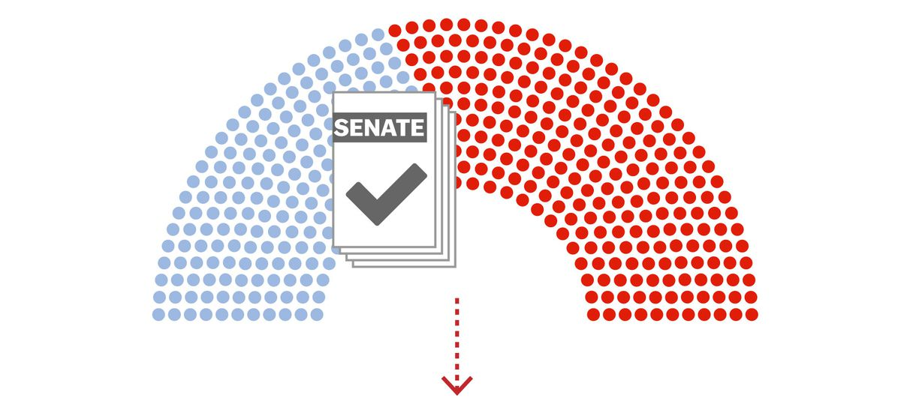

The bill is read and put to a vote.Members in attendance will vote to pass or not to pass the bill.Members may vote "Yea" for approval, "Nay" for disapproval, or "Present" to record that they were in attendance but chose not to vote.If a majority of the House votes to pass the bill, the bill is then referred to the Senate to undergo a similar process of approval.
 Previous Next